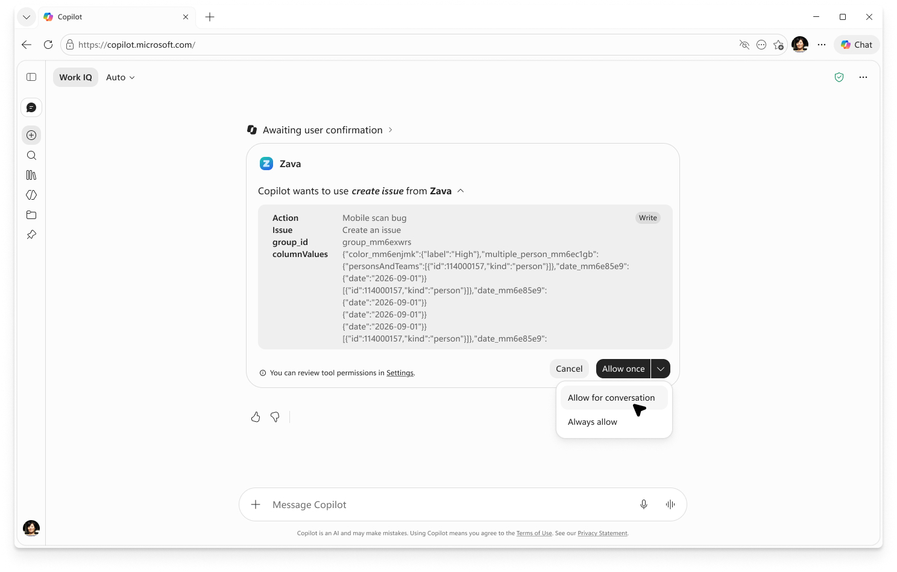
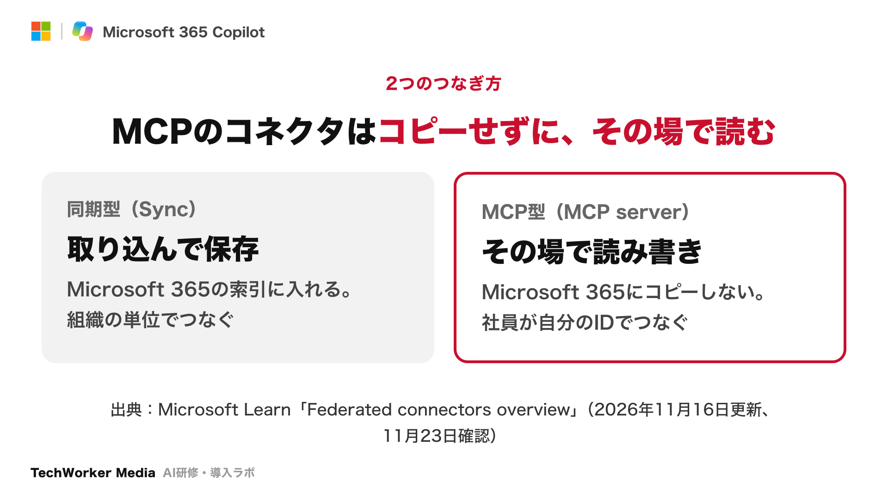
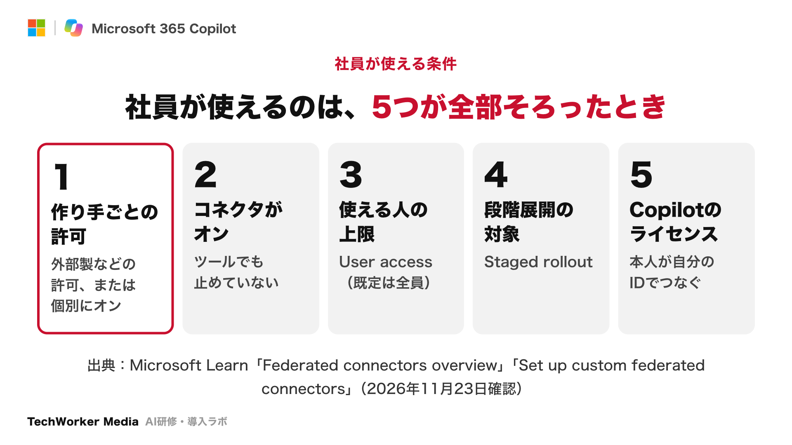
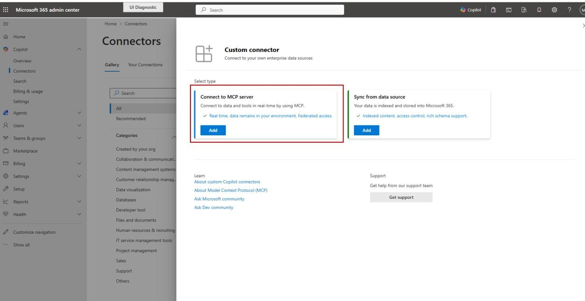
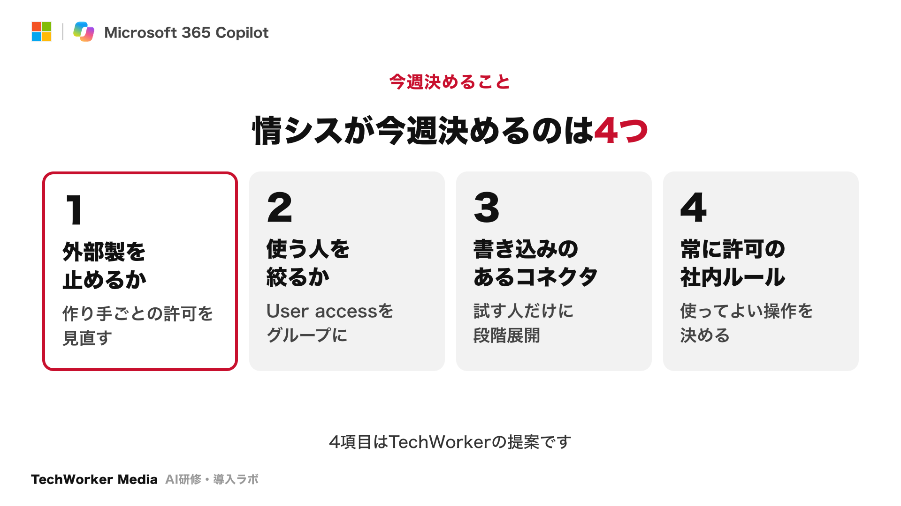

Microsoft 365 Copilotには、社外のサービスや社内のシステムをMCPという共通の方式でつなぐ「フェデレーテッド コネクタ」があります。10月27日のリリースノートには、自社のMCPのコネクタを管理センターで作る機能が載りました。管理者に関わる要点は次の3つです。
- 仕組み：つないだ先のデータをMicrosoft 365にコピーせず、その場で読みます。社員は自分のIDでつなぎ、もともと見られる範囲だけを使います。
- 既定の状態：Microsoftが作ったコネクタは、初めの設定のままなら社員が使える対象です。
- 書き込み：書き込みや削除のツールがあるコネクタでは、社員の承認のうえで、Copilotがつないだ先のデータを書き換えます。
公式の解説（2026年11月23日確認）をもとに、管理者が決めることを整理します。

出典：Microsoft Learn「Federated connectors overview」の画面。つないだ先へ書き込む前に、Copilotが承認を求めます（2026年11月23日に撮影）
CopilotのMCPコネクタとは何ですか？
社外のサービスや社内のシステムのデータを、MCPでその場で読み書きするCopilotのつなぎ口です。データをMicrosoft 365に取り込む従来のコネクタと並んで使えます。

MCP（Model Context Protocol）は、AIが社外の道具につなぐ共通の方式です。2つのつなぎ方の違いは次のとおりです。
原文“Synced Copilot connectors index data into Microsoft Graph. Federated Copilot connectors fetch content live; no indexing takes place.”
日本語訳同期型のCopilotコネクタは、データをMicrosoft Graphの索引に取り込みます。フェデレーテッドのCopilotコネクタは、中身をその場で取りに行き、索引は作りません。
| 項目 | 同期型のコネクタ | MCPのコネクタ（フェデレーテッド） |
|---|---|---|
| データの扱い | Microsoft 365の索引に取り込んで保存する | コピーせず、その場で取りに行く |
| つなぐ単位 | 組織の単位 | 社員ごとに、自分のIDでつなぐ |
| 管理画面での作り方 | Sync from data source | Connect to MCP server |
出典：Microsoft Learn「Federated connectors overview」「Set up custom federated connectors」（2026年11月23日確認）
使える場所はCopilot Chat、エージェント、Copilot Cowork、Word・Excel・PowerPoint・OutlookのCopilot、Researcherです。Researcherでは読む操作だけで、書き込みはできません。
何がいつ変わりましたか？
6月に一般提供が始まり、10月27日のリリースノートに自社のMCPのコネクタを作る機能が載りました。11月9日には、書き込みの操作がChatとCoworkで一般提供になりました。
| 日付 | 変わったこと | 出典 |
|---|---|---|
| 2026年6月2日 | フェデレーテッド コネクタの一般提供。Copilot Chat、Researcher、ExcelのAgent Modeで使える | リリースノート |
| 2026年7月15日 | 管理センターのCopilot、Connectorsのタブで、MCPのコネクタを配って管理できる | リリースノート |
| 2026年10月27日 | 管理者が自社のMCPのコネクタを管理センターで作り、組織に配れる機能が載る（Roadmap ID 501585） | リリースノート |
| 2026年11月9日 | コネクタの書き込み（作成・更新・削除）が、Copilot ChatとCoworkで一般提供 | Microsoft Copilot Blog |
| 2026年11月11日 | コネクタの一覧を1つにまとめ、Chat、Word、Excel、PowerPoint、Researcherで同じ一覧を使う | Microsoft Copilot Blog |
| 2026年11月16日更新 | 解説に、作成・更新・削除のツールと、社員の承認の手順が載っている | Microsoft Learn |
出典：Microsoft 365 Copilot release notes（2026年11月18日更新）、Microsoft Copilot Blog「Turn Copilot insights into action with connector write capabilities」（2026年11月9日）、「Microsoft Copilot Connectors Update: October 2026」（2026年11月11日）、Microsoft Learn「Federated connectors overview」（いずれも2026年11月23日確認）
10月27日のリリースノートは自社のコネクタについて次のように書いています。
原文“Admins can create custom Model Context Protocol (MCP) connectors in the Microsoft 365 Admin Centre and deploy them across Microsoft 365.”
日本語訳管理者はMicrosoft 365 管理センターで独自のMCPコネクタを作り、Microsoft 365全体に配ることができます。
この項目に、自社のテナントで使えるようになる日と、日本での提供時期は書かれていません。管理センターの画面で確かめます。
どのサービスをつなげますか？
Microsoftのギャラリーに、16の分類でコネクタが並んでいます。Slack、Box、Notion、マネーフォワードなども入っています。
ギャラリーのコネクタは、Microsoftが公開した物と、パートナーが申請してMicrosoftが承認した物です。11月23日の時点の一覧から、日本の会社でも使われているサービスをTechWorkerが選び、分類ごとに並べました。
| 分類 | サービスの例 |
|---|---|
| 会計・財務 | Money Forward、Intuit QuickBooks、Square |
| 共同作業 | Slack、Zoom、Gmail、Atlassian Rovo、Miro、Trello |
| 顧客管理（CRM） | Salesforce（プレビュー）、HubSpot、Zoho CRM、Intercom |
| ファイルと文書 | Box、Dropbox、Egnyte |
| コンテンツ管理 | DocuSign、Templafy |
| 業務の効率化 | Notion、Google Calendar、Airtable、Zapier、DeepL MCP |
| プロジェクト管理 | Asana、monday.com、Smartsheet、Azure DevOps |
| ITサービス管理 | ServiceNow、Cloudflare、Zoho Desk |
| 法務・人事 | LAWGUE、Gusto、Darwinbox、Harvey |
出典：Microsoft Learn「Federated connectors overview」のコネクタの一覧（2026年11月23日確認）。一覧は変わります。自社の管理センターのギャラリーで確かめてください
コネクタを使うには、つなぐ先のサービスの契約とアカウントが別に要ります。社員は自分のアカウントでサインインし、そのサービスで見られる範囲だけをCopilotから使います。
何もしなければ社員は使える状態ですか？
Microsoftが作ったコネクタは、初めの設定のままなら、Copilotのライセンスを持つ社員が使える対象です。外部の会社が作ったコネクタは、管理者が許可したときだけ使えます。

Microsoft Learnは既定の扱いを次のように書いています。
原文“Microsoft-built federated connectors are available by default when you select Allow agents and plugins built by Microsoft in Agent and plugin access and include the user in User access.”
日本語訳Microsoftが作ったフェデレーテッド コネクタは、Agent and plugin accessでAllow agents and plugins built by Microsoftを選び、その社員をUser accessに含めていれば、既定で使えます。
User accessの既定はAll users（全員）です。社員がコネクタを使えるのは、次の5つの条件が全部そろったときです。ただし作り手ごとの許可で止めていても、管理者がそのコネクタ1つを個別にオンにすれば使えます。
| 設定 | 管理センターの場所 | コネクタへの効き方 |
|---|---|---|
| Agent and plugin access（作り手ごとの許可） | Agents、Settings | Microsoft製・自社製・外部製ごとに、まとめて許可するか止める。今後出るコネクタにも効く |
| Enable / Disable | Copilot、Connectors、Your connections | コネクタ1つをオンにするか、設定を残して止める |
| User access（使える人の上限） | Agents、Settings | All users（既定）、指定した人とグループ、No usersから選ぶ |
| Staged rollout（段階展開） | Copilot、Connectors、Your connections | コネクタ1つを、どの人とグループに出すか決める |
| Microsoft 365 Copilotのライセンス | ライセンスの割り当て | 社員ごとに要る。つなぐ先には社員が自分のIDでサインインする |
出典：Microsoft Learn「Federated connectors overview」「Set up custom federated connectors」（2026年11月23日確認）。Agents、Toolsの画面でコネクタを止めても、Disableと同じ効き目です
外部の会社のコネクタを止めるには、Agent and plugin accessでAllow agents and plugins built by external publishersのチェックを外します。すでに出ている外部のコネクタは、段階展開がNo usersになります。6月2日のリリースノートは、新しいコネクタが社員に出る前の7日間の確認期間に、管理者が評価するよう勧めています。
Copilotの席とクレジットの年額を、人数から出せるExcelを用意しました。コネクタを試す人数の見積もりに使えます。
Copilotはつないだ先のデータを書き換えますか？
作成・更新・削除のツールがあるコネクタでは、社員が承認すると書き換えます。書き込みのツールはコネクタに含まれていて、別にオンにする設定はありません。
書き込みの操作は2026年11月9日の公式ブログで、Copilot ChatとCoworkでの一般提供が発表されました。冒頭の画面のとおり、Copilotは書き込む前に、送る中身を見せて承認を求めます。社員が選べるのは次の4つです。
| 選ぶ物 | 何が起きるか |
|---|---|
| Allow once（1回だけ許可） | 今回だけ実行する。次に同じツールを使うときに、また聞く |
| Allow for conversation（この会話の間は許可） | この会話の残りでは、同じツールについて聞かない |
| Always allow（常に許可） | 社員が設定を戻すか、発行元がツールを変えるまで聞かない |
| Cancel（取り消す） | 実行しない。つないだ先のデータは変わらない |
出典：Microsoft Learn「Federated connectors overview」（2026年11月16日更新、2026年11月23日確認）
読むためのツールは承認なしで動きます。書き込みのツールの既定はNeeds approval（毎回承認）で、発行元が新しい書き込みのツールを足したときも毎回承認から始まります。管理者の側の扱いは次のように書かれています。
原文“Write, update, and delete tools are part of the connector and aren't enabled separately.”
日本語訳書き込み・更新・削除のツールはコネクタの一部で、別々にはオンにしません。
管理センターのAgents、Toolsには、ツールごとに止める機能があると書かれています。ただし書き込みのツールだけを止める手順は、確認した資料にありません。書き込みを出したくないコネクタは、コネクタごと止めるのが確実です。
操作は社員の権限の範囲で行われ、管理者はMicrosoft Purviewで記録を確かめられます。Microsoftは、操作が社員自身の権限で行われることを伝えるため、書き込みのツールがあるコネクタを使う前に、社員とヘルプデスクへの案内を更新するよう勧めています。
自社のシステムをつなぐには何が要りますか？
MCPサーバーのURLと、グローバル管理者かAI管理者の役割が要ります。認証を先に整え、管理センターのConnect to MCP serverから作ります。

出典：Microsoft Learn「Set up custom federated connectors」の画面。自社のコネクタはConnect to MCP serverから作ります（2026年11月23日に撮影）
始める前にそろえる物は次のとおりです。
- MCPサーバー：Copilotに使わせるツール（検索、取得、作成など）を出すサーバーのURL。送信元のIPで絞っている場合は、Microsoft 365 Copilotの固定のIPを許可します。
- 役割：管理センターのグローバル管理者かAI管理者。Microsoft Entraでのシングルサインオンを使うなら、Entraの管理者の役割も要ります。
- 登録：Teams Developer Portalを使える状態と、開発者名、サイト、プライバシーポリシー、利用規約のURL。
- 認証：Microsoft Entraのシングルサインオン、OAuth 2.0、認証なしの3つから選びます。
作る手順は次のとおりです。
- 選んだ認証をTeams Developer Portalに登録し、登録IDを控えます（認証なしの場合は不要）。
- Microsoft 365 管理センターで、Copilot、Connectors、Galleryの順に開きます。
- Created by your orgのCreate a new connectorで、Addを押します。
- Custom connectorの画面で、Connect to MCP serverのAddを押します。
- 表示名、説明、MCPサーバーの宛先（Base URL）、登録ID（認証なしの場合は不要）を入れて保存します。
- Your connectionsでStaged rolloutを選び、試す人かグループを足します。全員に出すときはDeploy to all usersを押します。
設定の変更が全体に届くまで、最大10分かかります。社員の側はCopilotを再読み込みするか、新しい会話を始めると反映されます。ギャラリーに出して他社にも使ってもらうには、Microsoftへの申請と承認が別にあります。
情シスは今週なにを決めればよいですか？
外部の会社のコネクタを止めるか、使う人をどこまで絞るか、書き込みのあるコネクタを誰に出すか、「常に許可」をどこまで認めるかを決めます。

ここからはTechWorkerの提案です。
- 外部の会社のコネクタを止めるか決める：Agent and plugin accessの3つのチェックが、いまどうなっているかを見ます。審査の前に外部のコネクタを出したくない会社は、外部製のチェックを外し、使うコネクタだけを個別にオンにします。
- 使う人を絞るか決める：User accessが全員のままなら、まずCopilotを試すグループに絞ります。
- 書き込みのあるコネクタは試す人だけに出す：Staged rolloutで情報システム部門などに出し、Purviewで操作の記録を確かめてから広げます。
- 「常に許可」の社内ルールを決める：コメントの追加は常に許可でよい、データの削除は毎回承認する、のように操作ごとに書きます。
自社のシステムをつなぐ場合は、まず読むツールだけを出すMCPサーバーで試すと、書き込みの審査を後に回せます。Copilotの席とクレジットの全体はMicrosoft 365 Copilotの法人料金と契約に、Coworkの使い方とクレジットの上限はCopilot Coworkとはにまとめています。11月のIgniteで発表された管理の機能はMicrosoft Ignite 2026のCopilotまとめで扱っています。
よくある質問
確認したMicrosoft Learnの解説に、コネクタ自体の料金の記載はありません。社員にはMicrosoft 365 Copilotのライセンスが要り、つなぐ先のサービスの契約も別に要ります。
保存されません。フェデレーテッド コネクタはつないだ先のデータをMicrosoft 365にコピーせず、その場で取りに行きます。書き込みの操作では、必要な中身がつないだ先へ送られます。
管理者がそのコネクタを使える状態にしていれば、社員はCopilot Chatの設定にあるSourcesから、自分のアカウントでつなげます。管理者が止めたコネクタは、社員の一覧に出ません。
要りません。書き込み・更新・削除のツールはコネクタの一部で、コネクタを出すと一緒に使えます。書き込みのツールだけを止める手順は確認した資料にないため、出したくない場合はコネクタごと止めます。社員は自分の設定で、書き込みのツールを毎回承認に戻せます。
Microsoft Learnによると、最大10分かかります。社員はサインアウトする必要はなく、Copilotを再読み込みするか、新しい会話を始めると反映されます。
次の一歩は何から始めればよいですか？
管理センターのAgents、Settingsで、作り手ごとの許可と使える人の設定を開くことから始めます。
- Agent and plugin accessとUser accessが、いまどうなっているかを確かめます。
- Copilot、Connectors、Your connectionsで、オンになっているコネクタを並べます。
- 書き込みのあるコネクタを試すグループと、「常に許可」の社内ルールを決めます。
TechWorkerではCopilotの研修を、受講者の実際の業務1本から組みます。教材は公式の変更に合わせて毎週見直し、30日後に使った人の割合と1件の時間を測って報告します。検討段階のご相談だけでも歓迎です。
出典と確認範囲
確認日：2026年11月23日。自社のMCPのコネクタを作る機能が自社のテナントで使える日、日本での提供時期、コネクタ自体の料金は、確認した公式の資料に書かれていません。TechWorkerの環境では、MCPのコネクタの作成と書き込みの承認の画面を確かめていません。ギャラリーの一覧は変わるため、設定の時点で自社の管理センターを確認してください。今週決めることの4項目と、読むツールから試す進め方はTechWorkerの提案です。
- Microsoft Learn「Federated connectors overview」（2026年11月16日更新）
- Microsoft Learn「Set up custom federated connectors」（2026年10月19日更新）
- Microsoft 365 Copilot release notes（2026年6月2日・7月15日・10月27日の項）
- Microsoft Copilot Blog「Turn Copilot insights into action with connector write capabilities」（2026年11月9日）
- Microsoft Copilot Blog「Microsoft Copilot Connectors Update: October 2026」（2026年11月11日）